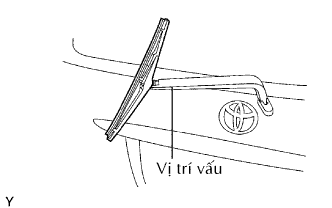
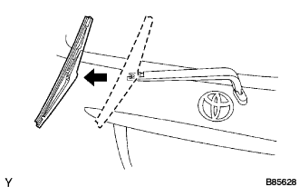
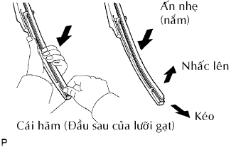

CAO SU GẠT NƯỚC PHÍA SAU > THÁO |
| 1. THÁO LƯỠI GẠT NƯỚC PHÍA SAU |
|  |
Nâng lưỡi gạt mưa đến vị trí mà khóa cài tách ra với tiếng kêu tách, như trong hình vẽ.
|  |
Kéo lưỡi gạt nước thẳng về phía trái của xe để tháo nó ra khỏi tay gạt mưa.
| 2. THÁO CAO SU GẠT NƯỚC PHÍA SAU |
|  |
Nhấc và kép đầu của cao su gạt nước nhô lên khỏi miếng hãm lưỡi gạt như trong hình vẽ.